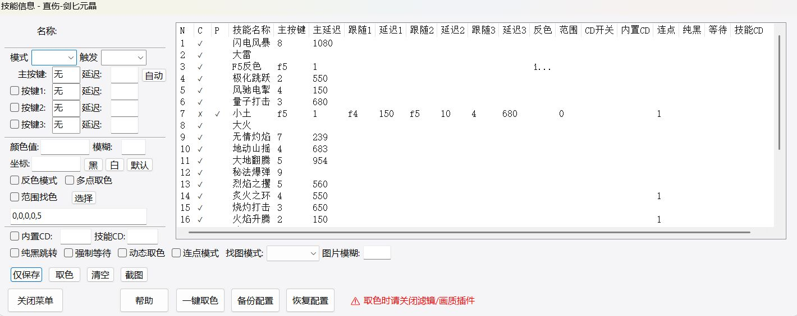
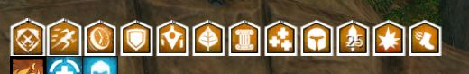
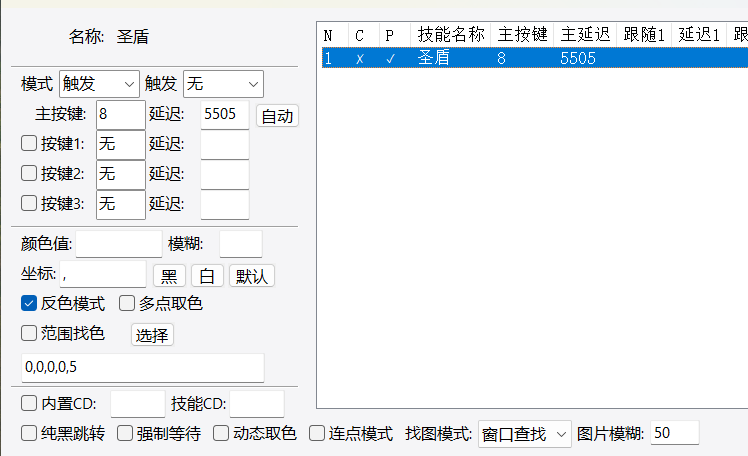
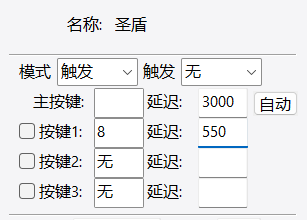
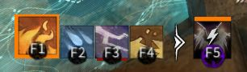
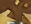
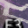
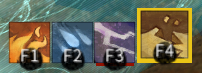

1.79新功能介绍，单独开一贴
本次更新优化了找图模式，可实现buff维持，技能识别。
相比旧版更快，识别率更高。

之前的全局图片模糊度新版中删了，不足以应对更复杂的判断。
本文主要通过实例介绍新识图功能的各项用法。
识图当前分为2个模式
全屏找图，也就是窗口模式
固定坐标，也就是跟范围找色一样，在某一个区间内找图，这个模式下，找图速度几乎跟找色一样快。
通过这2个模式的切换，可以实现buff监控，龙魂姿态的切换，元晶协调的切换，编织的切换等功能。
首先来讲下buff监控。

例如，在右侧，有许多buff，那么通过截图模式，截取其中的一个图片
例如：
我要监控圣盾消失，执行8号技能

圣盾buff消失，那么要勾选反色，也就是圣盾的图标没了，才执行8号技能。
注意，圣盾buff不是固定位置，所以模式要选择窗口查找，buff位置变了也能找到，模糊度要改成50，或者自己调节。
但是在buff图标倒计时3秒的时候会闪，这时候图标还没消失，如果你放了技能反而浪费。
~

所以按键要改成，这个是最新版才有的，按键不设置，只留延迟，那么也就计算。
也就是干等3秒后，在执行8号按键，例如撤退，这样实现buff维持。
图片模糊度也是很重要，因为图标太小，所以需要提高模糊度，可以自行修改。
接下来以元晶举例 来讲下切姿态。

比如：
大火=小雷
这个条件在以前，其实取色完全可以实现，但因为元素的职业有个问题，切姿态是，图标有很小的概率会错位。
如果是取色就容易打着就不识别了。
一般推荐是采用多点取色，或者+模糊度解决，取色取正中心就行。
~
这里如果用最新方案的找图模式解决也很简单。

就是截取图标一部分，这里注意，不要全部截图了，截多了反而识别不到。

最好是截取图标正中心。
因为采用的是固定坐标，也就是你截图的区域内才会识别，所以不用担心其他干扰。
~

这样不管技能怎么变，总会识到图片的，如果不行就加模糊度。
不过还有一点要注意，图片识别到时候，有很小概率，在倒计时还剩0.5秒，或者1秒的时候，就触发了跟随按键，导致误触。
最好根据实际情况，决定是用图片，还是多点取色解决。
最后，就是龙魂职业的切换了。

在以前版本，是需要使用范围找色，框选左侧，区域不存在 白色，才切换。
新版，直接一个图片解决。
同样的，别全部截图，只截取中心区域。
例如，当前姿态是刺客，那么用图片就不能取刺客的姿态图标了。
而是要取左侧的，因为触发条件是冷却结束，所以取契灵的图标，图片能找到，说明可用，表示可以切姿态。
~

反过来也是一样，当前是契灵，就不能取当前姿态的图片。
而是要截图刺客的图标，当刺客图标找到，说明冷却已经结束，就可以直接切了。
~
这样的办法省去了许多麻烦，但可能因为部分技能颜色导致各种问题，最好自行测试。
评论列表（7）
哪里下载软件啊
以前切姿态用左边姿图标12点黑色反色貌似也可以
大佬，现在龙魂切姿态好像可以直接在左边职业取色就行了
@不是大佬 没仔细看过，以前冷却时跟非冷却，F1那个图标是一个颜色，所以需要框选区域反色。现在不清楚。
@melis 原来是这样，我测试了一下，现在还是，冷却中和冷却后是一个颜色。我姿态武器同时切的，切姿态加了切武器的条件，所以看不出来问题。
接下来的更新也可以考虑某些技能的释放，鼠标指针固定在血量上了，位移技能就不用位移变成原地起跳了吧
大佬，厉害了